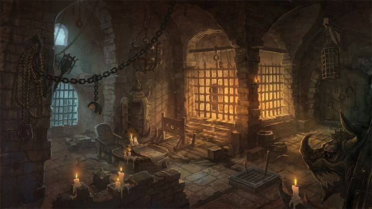

Waneta was already far away so Eva needed to catch up. Eva said to Waneta:"I want to help you get off of this island!". Waneta stoped and smiled and said:"Thank you, I think you should know who I am. I'm actully a shift shaper. I can turn into who ever I want. You should even know that Abigor is the ruler of the island. There is only one way to get off this island. Going through the palace were the ruler lives." Eva agreed to do it. The next day they sneaked in the palace. They were almost there untill, the guards caught them and they were sent to see Abigor.
